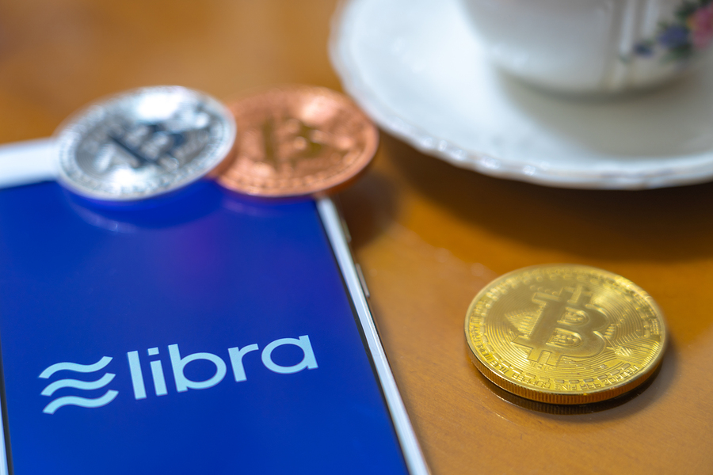

Faceboookが2019年6月に発表した仮想通貨「Libra」（以下「リブラ」）が大きな注目を集めています。ポテンシャルに注目して期待を寄せる向きもあれば、金融システムへの脅威として警戒する動きもあります。筆者は、そもそも「リブラ」のインパクトは限定的と考えます。以下、その理由を解説します。
「リブラ」概要
まずは事実関係を整理します。
「リブラ」はFacebookが開発した仮想通貨（または暗号資産、本稿では仮想通貨と呼称します）であり、2019年6月に発表された直後から各国の中央銀行や政府機関、金融事業者、一般消費者など多方面から強い関心が寄せられました。
運用開始は2020年の予定と当初発表されていました。本稿執筆時点では、各国の許認可の関係でもっと遅れるとの見方が既に出ています。
ビットコイン等の他の多くの仮想通貨と異なり、主要通貨（国債）のバスケットに連動する「ステーブルコイン」です。投機的な価格変動を防ぎ、安定した（ステーブルstableな）価値を持たせるという設計意図があります。
ユーザーの個人情報の取扱で集中砲火を浴びているFacebook。自社への信用が大きく損なわれていることを自覚しています。Facebook単独運営は当初から避けられており、スイスに設立した「リブラ協会」が運営を担うことになっています。発表時点で、協会にはVisa、MasterCard、PayPal、Stripeといった決済大手に加え、大手テレコム事業者、非営利団体など28社が加盟メンバーとのことでした。なお、ここで特筆すべきは、協会には金融機関は不在である、という点です。
技術的には、「リブラ」はブロックチェーン型の仮想通貨として構築されます。当初は「リブラ協会」メンバーのみがノードとなる「permission型（コンソーシアム型）」で運用されます。
サービス開始から5年で「permissionless型（パブリック型）」に移行する方針が表明されています。これはビットコインなどと同じく、誰でも許可不要でノードになれる、という仕組みです。しかし、「リブラ」のpermission型からpermissionless型への移行ロードマップは特に公表されていません。具体的にどうすすめるのか不明ですので、その実現性も評価保留状態です。
「リブラ」の全取引履歴はブロックチェーンに書き込まれ保存されることになります。その全取引履歴は、外部アプリからも閲覧可能とする方針とのことです。当初のpermission型の間は公開範囲は限定される可能性はありますが、permissionless型に移行後は、全取引が全世界に公開されると考えるのが妥当です。
それでは、「リブラ」の用いた取引情報は全て公表されてしまうのでしょうか。Facebookによる白書には、「リブラ口座IDは自然人には明示的には紐付かない」旨の記載があるのみでした。これはビットコインと同じく、「口座番号レベルでの取引履歴は全公開だが、誰がその口座番号を使っているかは非公表」という仕組みとも読めます。いずれにせよ、zcashなど取引の秘密を守ることをウリにしているブロックチェーン型仮想通貨もある中で、機微情報の保護という点では「リブラ」にはあまり見るべきものがない、というのが現状です。
グローバル市場での見通し
このように、まだ情報が出揃っていない「リブラ」ですが、世界で28億人のユーザーを擁するFacebookが放つ仮想通貨であって、そのインパクトは重大と見る識者が多くいます。
しかし、Faceboookがソーシャルネットワークとして巨大だからといって、金融＆決済サービスでもやすやすとユーザー獲得できるかというと、そうとは言い切れません。
その一つの例が、Messenger送金です。日本ではあまり知られていませんが、Facebookは、Messenger上で個人間送金できるサービスを持っています。もともと米国で始めたサービスだったものを、2017年には英国とフランスでも開始しました。しかし2019年4月、両国でのサービスの停止を発表しています。停止の本当の理由はわかりませんので、「リブラ」に注力するためという見方も可能です。ただ、英国とフランスで、Messenger送金が大成功していたかというとそういう事実はありません。簡単にユーザー獲得し利用拡大を実現したわけではないのです。
このように、「Facebookなら、その規模を活かして金融サービスでも成功する」とは言えません。
また、上でも述べましたが、Facebookによるユーザーデータの取扱には欧米諸国中心に大きな反発があります。それが解決を見ないうちに、「リブラ」を介して金銭価値の取扱まで開始しようというわけですので、すでに政府機関や国際機関から大きな反発が起こっています。
Facebookもそれを予期して、自社単独運営ではなく、「リブラ協会」による共同運営体制を提案しているわけです。しかし、そのような集団運営体制が効果的に働くかどうかは現時点ではまだわからないのが現状です。
たとえ無事にサービス開始にこぎつけて、5年後にはpermissionless型に移行できたとしても、そのようなpermissionless型で取引履歴が全公開となるような仮想通貨が、決済と送金に広く利用されている事例は存在しません。仕組みとしてはビットコインがその例ですが、ビットコインは主に投機対象であって、決済と送金で使っているユーザーはごくわずかです。
そして技術面です。Facebookによると、「リブラ」の初期性能は1000トランザクション／秒とのことです。約7トランザクション／秒と言われるビットコインの問題を克服しようということですが、「リブラ協会」メンバー28ノードだけで実現可能なのかは、立証されていません。
日本市場へのインパクトは限定的
このように、様々な問題点を抱えているように見える「リブラ」ですが、日本市場においてはもっと単純な問題があります。Facebookの利用者数です。
人口に占めるユーザー数の割合を「浸透率（penetration）」と呼ぶことにします。海外の調査会社によると、米国におけるFacebookの浸透率は70%を超えています。誰でも使っている、というように見えると思います。こうした状況であれば、Facebookによる仮想通貨が金融市場に大きなインパクトを与えそうだというのは一理あります。
欧州でのFacebookの浸透率は40%程度です。米国には劣りますが、存在感は小さくありません。欧州の政府機関としては、個人データの取扱の面では事前に引き締めておかなければ、と思うことでしょう。
同調査では、アジア地域でのFacebook浸透率は18%です。中国ではそもそもFacebookが使えません。
Facebookの米国と欧州での浸透率は「FACEBOOK USERS IN THE WORLD」が出典。
そして日本市場。上記とは別の、ソーシャル系アプリの利用率です。トップはLINEで81%、Twitterは43%。そしてFacebookは31%で、LINEの半分にも満たない水準で、Twitterにも負けています。
日本でのFacebook、LINE、Twitterの利用率は
そして、国内トップ、Facebookを大きく引き離しているLINEには、既に「LINEペイ」があります。資金決済法上の、前払式支払手段と資金移動業の両方のライセンスを駆使した決済と送金サービスを展開しています。ユーザー数も多く、前途有望なサービスではありますが、それでも日本の決済と送金の市場に大きなインパクトを与えたとはまだ言えないのが実情ではないでしょうか。
国内の事業者や政府機関が「リブラ」について心配するのであれば、それは「リブラ」が「LINEペイ」以上の「脅威」であるという前提がなければ説明できません。しかし、筆者はそのような状況がすぐに訪れるとは現時点では思いません。
また、「リブラ」を日本国内で運営するには、「資金移動業」や「仮想通貨交換業」のいずれかの制度で規制される可能性が強いと考えます。Facebookは「リブラ」の送金手数料は低く設定するとしていますが、コンプライアンス体制維持のための費用はどのように賄うのか、不明です。さらに、そのようなコンプライアンス体制維持は、日本だけでなく、「リブラ」を運営するそれぞれの国で必要です。決して簡単な話ではありません。
狂騒に踊らず、状況を注視
「リブラ」の潜在力は大きいかもしれませんが、その実現に向けては様々な課題や疑問点があります。
筆者は、「リブラ」が日本市場において大きな影響力を持つには時間がかかると考えます。国内プレイヤーは、冷静に状況を注視すべきです。
参考にした記事等
- 「Facebook wants to create a worldwide digital currency」、The Economist、2019年6月20日
- 「Facebook wants to create a global currency」、The Economist、2019年6月22日
- 「What is Libra?」、The Economist、2019年7月12日
- 「Seven Key Takeaways From Libra’s Whitepaper」、Forbes、2019年6月18日
- 「Facebook’s Libra cryptocurrency: where are the banks?」、THE BLOCK、2019年6月18日
- 「Libra White Paper」、Facebook